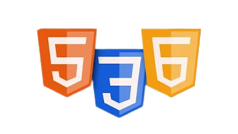

No início do semestre, começamos nossos estudos com os fundamentos da programação e fomos apresentados a algumas linguagens, sendo elas:
HTML, também conhecido como HyperText Markup Language, é uma linguagem empregada na criação de páginas da internet. Seu propósito é fornecer uma estrutura e definir o conteúdo das páginas por meio de uma série de marcações, chamadas tags. Essas tags são interpretadas pelos navegadores para exibir o conteúdo de forma apropriada. Aprendemos comandos básicos para formatação de títulos, criação de formulários, botões, links, listas e tabelas. Além disso, foi enfatizada a importância da semântica, seguindo as melhores práticas de programação. Utilizamos elementos semânticos como divs com as classes nav, section, footer, header, article, aside, main, figure, em, strong e bold para dar forma aos conteúdos.
O CSS, ou Cascading Style Sheets, é uma linguagem de estilos que desempenha um papel importante no controle da aparência e do design de páginas da web. Trabalhando em conjunto com o HTML, ele permite a definição de características visuais como cores, tipos de fonte, disposição dos elementos e espaçamento, entre outros. Em suma, é responsável por estilizar e embelezar os elementos HTML em uma página web. O CSS nos permitiu personalizar o visual do documento HTML, oferecendo recursos como animações de escala, transição, hover, scroll, pointer, transform, perspective e opacidade, entre outros. Também aprendemos a posicionar os elementos na página de forma personalizada, utilizando propriedades de posicionamento.
JavaScript é uma linguagem de programação amplamente utilizada para desenvolvimento web. É uma linguagem de script que permite a criação de interatividade e dinamismo em páginas da web. Ao contrário do HTML e do CSS, que são responsáveis pela estrutura e estilização das páginas, respectivamente, o JavaScript é utilizado para adicionar funcionalidades interativas. Durante o curso, desenvolvemos algoritmos para realizar uma variedade de cálculos, incluindo média, potenciação, divisão, fatorial, multiplicação, soma e resto de divisão. Também exploramos estruturas de repetição e condicionais para criar algoritmos mais complexos. No que diz respeito ao JavaScript no desenvolvimento web, aprendemos como integrar scripts aos documentos HTML. Além disso, exploramos a manipulação do DOM (Document Object Model), que nos permite interagir com o HTML de diversas formas. Através do DOM, podemos adicionar funções para capturar eventos, como cliques, passar o mouse sobre um elemento, fechar uma guia ou enviar um formulário.

HTML, também conhecido como HyperText Markup Language, é uma linguagem empregada na criação de páginas da internet. Seu propósito é fornecer uma estrutura e definir o conteúdo das páginas por meio de uma série de marcações, chamadas tags. Essas tags são interpretadas pelos navegadores para exibir o conteúdo de forma apropriada. Aprendemos comandos básicos para formatação de títulos, criação de formulários, botões, links, listas e tabelas. Além disso, foi enfatizada a importância da semântica, seguindo as melhores práticas de programação. Utilizamos elementos semânticos como divs com as classes nav, section, footer, header, article, aside, main, figure, em, strong e bold para dar forma aos conteúdos.
O CSS, ou Cascading Style Sheets, é uma linguagem de estilos que desempenha um papel importante no controle da aparência e do design de páginas da web. Trabalhando em conjunto com o HTML, ele permite a definição de características visuais como cores, tipos de fonte, disposição dos elementos e espaçamento, entre outros. Em suma, é responsável por estilizar e embelezar os elementos HTML em uma página web. O CSS nos permitiu personalizar o visual do documento HTML, oferecendo recursos como animações de escala, transição, hover, scroll, pointer, transform, perspective e opacidade, entre outros. Também aprendemos a posicionar os elementos na página de forma personalizada, utilizando propriedades de posicionamento.
JavaScript é uma linguagem de programação amplamente utilizada para desenvolvimento web. É uma linguagem de script que permite a criação de interatividade e dinamismo em páginas da web. Ao contrário do HTML e do CSS, que são responsáveis pela estrutura e estilização das páginas, respectivamente, o JavaScript é utilizado para adicionar funcionalidades interativas. Durante o curso, desenvolvemos algoritmos para realizar uma variedade de cálculos, incluindo média, potenciação, divisão, fatorial, multiplicação, soma e resto de divisão. Também exploramos estruturas de repetição e condicionais para criar algoritmos mais complexos. No que diz respeito ao JavaScript no desenvolvimento web, aprendemos como integrar scripts aos documentos HTML. Além disso, exploramos a manipulação do DOM (Document Object Model), que nos permite interagir com o HTML de diversas formas. Através do DOM, podemos adicionar funções para capturar eventos, como cliques, passar o mouse sobre um elemento, fechar uma guia ou enviar um formulário.
Projetos desenvolvidos:
Durante o curso, tivemos a oportunidade de desenvolver projetos para aprimorar e colocar em prática nossos conhecimentos de programação:Nosso primeiro projeto foi a criação de um currículo utilizando apenas HTML e CSS. Essa atividade representou o primeiro contato de muitos alunos com a programação, permitindo-nos aplicar os conceitos aprendidos até então. Foi uma experiência valiosa para consolidar os fundamentos e despertar o interesse pela programação.

No segundo projeto, tivemos a oportunidade de simular um sistema de folha de pagamento. Nesse sistema, os usuários inserem seus dados, como salário bruto, vale transporte e informações sobre dependentes, caso possuam. Com base nessas informações, o programa realiza cálculos para aplicar os descontos adequados no salário, levando em consideração o IRRF (Imposto de Renda Retido na Fonte) e o INSS (Instituto Nacional do Seguro Social).
No terceiro e último projeto dessa vertente, desenvolvemos um site que permitia aos usuários implementar seu próprio código em um CSS predefinido. O site fornecia uma estrutura pré-estabelecida, semelhante a uma "IDE" (Integrated Development Environment), onde os usuários podiam escrever seu código CSS e visualizar os resultados imediatamente.